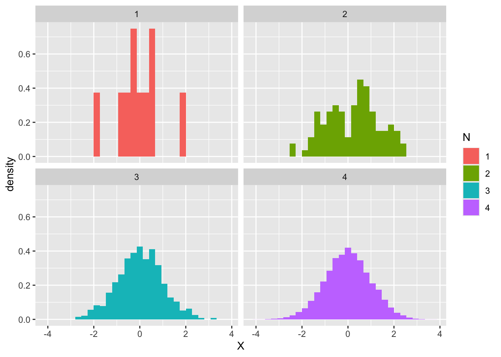
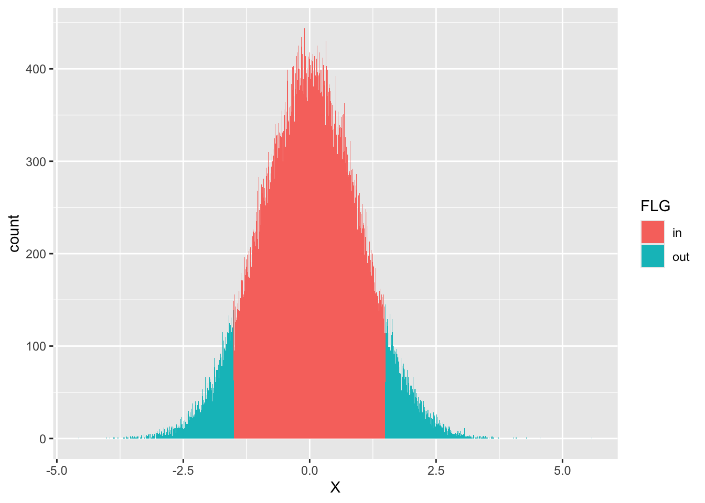
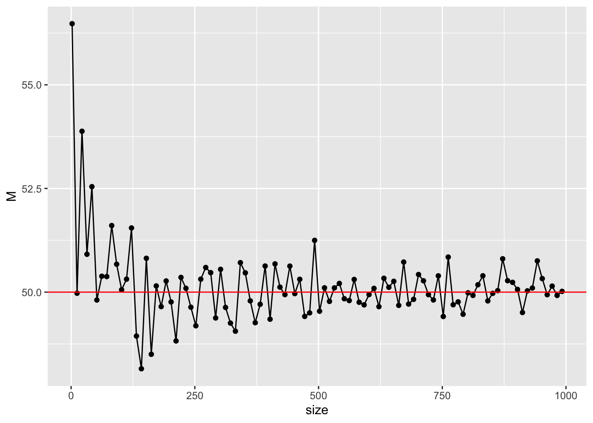

Code
# 標準のプロット関数，curve
curve(dnorm(x), from = -4, to = 4)
統計と確率は密接な関係がある。 まずデータをたくさん集めると，個々のケースでは見られない全体的な傾向が見られるようになり，それを表現するのに確率の考え方を使う，というのがひとつ。 次にデータがそれほどたくさんなくとも，大きな全体の中から一部を取り出した標本Sampleと考えられるとき，標本は全体の性質をどのように反映しているかを考えることになる。ここで全体の傾向から一部を取り出した偶然性を表現するときに確率の考え方を使うことになる。 最後に，理論的・原理的に挙動がわかっている機械のようなものでも，現実的・実践的には系統だったズレが生じたり，偶然としか考えられない誤差が紛れ込むことがある。前者は機械の調整で対応できるが，後者は偶然が従う確率を考える必要がある。
心理学は人間を対象に研究を行うが，あらゆる人間を一度に調べるわけにはいかないので，サンプルを取り出して調査したり実験したりする(第2のケース)。データサイエンスでは何万レコードというおおきなデータセットになるが，心理学の場合は数件から数十件しかないことも多い。また，心理学的傾向を理論立ててモデル化できたとしても，実際の行動には誤差が含まれている可能性が高い(第3のケース)。このことから，心理学で得られるデータは確率変数として考えられ，小標本から母集団の性質を推測する推測統計と共に利用される。
厳密に数学的な意味での確率は，集合，積分，測度といった緻密な概念の積み重ねから定義される1。ここではその詳細に分け入らず，単に「特定の結果が生じる可能性について，0から1の間の実数でその大小を表現したもの」とだけ理解しておいて欲しい。この定義からは，「全ての可能な組み合わせのうち当該事象の成立する割合」という解釈も成り立つし，「主観的に重みづけた真実味の強さに関する信念の度合い」という解釈も成り立つ。2 これまで学んできた確率は順列・組み合わせを全て書き出す退屈なもの，と思っていたかもしれないが，「十中八九まちがいないね(80-90%ほど確からしいと考えている)」という数字も確率の一種として扱えるので，非常に身近で適用範囲の広い概念である。理解を進めるポイントの1つとして，確率を面積として考えると良いかもしれない。ありうる状況の全体の空間に対して，事象の成立する程度がどの程度の面積がどの程度の割合であるかを表現したのが確率という量である，と考えるのである( 平岡 and 堀 (2009) は書籍の中で一貫して面積で説明している。この説明だと，条件付き確率などの理解がしやすい。)。
ただし注意して区別しておいて欲しいのが，確率変数とその実現値の違いである。データセットやスプレッドシートに含まれる値は，あくまでも確率変数の実現値（実際に観測された値）というのであって，確率変数はその不確実な状態を有した変数そのものを指す言葉である。サイコロは確率変数だが，サイコロの出目は確率変数の実現値である。心理変数は確率変数だが，手に入れたデータはその実現値である。実現値を通じて変数の特徴を知り，全体を推測するという流れである。
目の前のデータを超えて，抽象的な実体で議論を進めることが難しく感じられるかもしれない。実は誰しもそうなのであって，確率の正確な理解は非常に難易度が高い。しかしRなど計算機言語に実装されている関数を通じて，より具体的に，操作しながら理解することで徐々に理解していこう。
確率変数の実現値は，確率分布に従う。確率分布とは，その実現値がどの程度生じやすいかを全て表した総覧であり，一般的に関数で表現される。実現値が連続的か離散的かによって名称が異なるが，連続的な確率分布関数は確率密度関数(Probability Density Function)，離散的な確率分布関数は確率質量関数(Probability Mass Function)という。
Rには最初から確率に関する関数がいくつか準備されている。最も有名な確率分布である正規分布について，次のような関数がある。
# 標準のプロット関数，curve
curve(dnorm(x), from = -4, to = 4)
# ggplot2を使ってカッコよく
pacman::p_load(tidyverse)
data.frame(x = seq(-4, 4, by = 0.01)) %>%
mutate(y = dnorm(x)) %>%
ggplot(aes(x = x, y = y)) +
geom_line() +
theme_classic()
ここでdnormという関数を使っているが，dはDensity(確率密度)の頭文字であり，normはNormal Distribution(正規分布)の一部である。このように，Rでは確率分布の名前を表す名称(ここではnorm)と，それに接頭文字ひとつ(d)で関数を構成する。この接頭文字は他にp,q,rがあり，dpois(ポアソン分布poisson distributionの確率密度関数)，pnorm(正規分布normal distributionの累積分布関数),rbinom(二項分布binomial distributionからの乱数生成)のように使う。
ここでは正規分布を例に説明を続けよう。正規分布は平均\(\mu\)と標準偏差\(\sigma\)でその形状が特徴づけられる。これらの確率分布の特徴を表す数字のことを母数 parameterという。たとえば，次の3つの曲線はパラメータが異なる正規分布である。
data.frame(x = seq(-4, 4, by = 0.01)) %>%
mutate(
y1 = dnorm(x, mean = 0, sd = 1),
y2 = dnorm(x, mean = 1, sd = 0.5),
y3 = dnorm(x, mean = -1, sd = 2)
) %>%
pivot_longer(-x) %>%
ggplot(aes(x = x, y = value, color = name)) +
geom_line()
平均は位置母数，標準偏差はスケール母数とも呼ばれ，分布の位置と幅を変えていることがわかる。言い換えると，データになるべく当てはまるように正規分布の母数を定めることもできるわけで，左右対称で単峰の分布という特徴があれば，正規分布でかなり様々なパターンを表せる。
さて，上の例で用いた関数はいずれもdを頭に持つdnormであり，確率分布の密度の高さを表現していた。ではpやqが表すのは何であろうか。数値と図の例を示すので，その対応関係を確認してもらいたい。
# 累積分布関数
pnorm(1.96, mean = 0, sd = 1)[1] 0.9750021# 累積分布の逆関数
qnorm(0.975, mean = 0, sd = 1)[1] 1.959964数値で直感的にわかりにくい場合，次の図を見て確認しよう。pnorm関数はx座標の値を与えると，そこまでの面積(以下のコードで描かれる色付きの領域)すなわち確率を返す。qnorm関数は確率(=面積)を与えると，確率密度関数のカーブの下領域を積分してその値になるときのx座標の値を返す。
# 描画
prob <- 0.9
## 全体の正規分布カーブ
df1 <- data.frame(x = seq(from = -4, 4, by = 0.01)) %>%
mutate(y = dnorm(x, mean = 0, sd = 1))
## qnorm(0.975)までのデータ
df2 <- data.frame(x = seq(from = -4, qnorm(prob), by = 0.01)) %>%
mutate(y = dnorm(x, mean = 0, sd = 1))
## データセットの違いに注意
ggplot() +
geom_line(data = df1, aes(x = x, y = y)) +
geom_ribbon(data = df2, aes(x = x, y = y, ymin = 0, ymax = y), fill = "blue", alpha = 0.3) +
## 以下装飾
geom_segment(
aes(x = qnorm(prob), y = dnorm(qnorm(prob)), xend = qnorm(prob), yend = 0),
arrow = arrow(length = unit(0.2, "cm")), color = "red"
)
d,p,q,rといった頭の文字は，他の確率分布関数にも付く。では次にrについて説明しよう。
乱数とは何であるかを説明するのは，「ランダムである(確率変数である)とは如何なることか」を説明するのと同じように難しい。 カンタンに説明するなら，規則性のない数列という意味である。 しかし計算機はアルゴリズムに沿って正しく数値を計算するものだから，ランダムに，規則性がない数字を示すということは厳密にはあり得ない。 計算機が出す乱数は，乱数生成アルゴリズムに沿って出される数字であり，ランダムに見えて実は規則性があるので，疑似乱数というのが正しい。
とはいえ，人間が適当な数字を思いつきで誦じていく3よりは，よほど規則性がない数列を出すので，疑似的とはいえ十分に役に立つ。 たとえばアプリなどで「ガチャ」を引くというのは，内部で乱数によって数値を出し，それに基づいてあたり・ハズレ等の判定をしている。他にも，RPGなどで攻撃する時に一定の確率で失敗するとか，一定の確率で「会心の一撃」を出すというのも同様である。ここで大事なのは，そうしたゲームへの実装において規則性のない数字に基づくプログラムにしたとしても，その統計的な性質，すなわち実現値の出現確率はある程度制御したいのである。
そこで，ある確率分布に基づく乱数を生成したい，ということになる。幸いにして，一様乱数(全ての実現値が等しい確率で生じる)を関数で変換することで，正規分布ほか様々な確率分布に従う乱数を作ることができる。Rにはその基本関数として幾つかの確率分布に従う乱数が実装されている。たとえば次のコードは，平均50，SD10の正規分布に従う乱数を10個出現させるものである。
rnorm(n = 10, mean = 50, sd = 10) [1] 46.83782 50.40875 55.91177 44.96902 53.85035 59.52649 58.21191 60.32936
[9] 22.96581 40.36557たとえば諸君が心理統計の練習問題を作ろうとして，適当な数列が欲しければこのようにすれば良いかもしれない。しかし，同じ問題をもう一度作ろうとすると，乱数なのでまた違う数字が出てしまう。
rnorm(n = 10, mean = 50, sd = 10) [1] 44.47792 52.27083 35.43064 32.58656 58.44323 58.22410 67.71940 50.08150
[9] 36.21031 37.29706疑似乱数に過ぎないのだから，再現性のある乱数を生じさせたいと思うかもしれない。そのような場合は，set.seed関数を使う。疑似乱数は内部の乱数生成の種(seed)から計算して作られているため，その数字を固定してやると同じ乱数が再現できる。
# seedを指定
set.seed(12345)
rnorm(n = 3)[1] 0.5855288 0.7094660 -0.1093033# 同じseedを再設定
set.seed(12345)
rnorm(n = 3)[1] 0.5855288 0.7094660 -0.1093033乱数の使い方のひとつは，先に述べたように，プログラムが偶然による振る舞いをしているように仕掛けたいとき，ということだろう。
実は他にも使い道がある。それは確率分布を具体的に知りたいときである。次に示すのは，標準正規分布から\(n = 10,100,1000,10000\)とした時のヒストグラムである。
rN10 <- rnorm(10)
rN100 <- rnorm(100)
rN1000 <- rnorm(1000)
rN10000 <- rnorm(10000)
data.frame(
N = c(
rep(1, 10), rep(2, 100),
rep(3, 1000), rep(4, 10000)
),
X = c(rN10, rN100, rN1000, rN10000)
) %>%
mutate(N = as.factor(N)) %>%
ggplot(aes(x = X, fill = N)) +
# 縦軸を相対頻度に
geom_histogram(aes(y = ..density..)) +
facet_wrap(~N)Warning: The dot-dot notation (`..density..`) was deprecated in ggplot2 3.4.0.
ℹ Please use `after_stat(density)` instead.`stat_bin()` using `bins = 30`. Pick better value with `binwidth`.
これを見ると，最初の10個程度のヒストグラムは不規則な分布に見えるが，100,1000と増えるに従って徐々に正規分布の理論的形状に近似していくところがみて取れる。
Rにはポアソン分布や二項分布などに加え，統計に馴染みの深いt分布やF分布，\(\chi^2\)分布などの確率分布関数も実装されている。これらの分布はパラメタの値を聞いてもイメージしにくいところがあるかもしれないが，そのような時はパラメタを指定した上で乱数を大量に生成し，そのヒストグラムを描けば確率分布関数の形が眼に見えてくるため，より具体的に理解できるだろう。
実際，ベイズ統計学が昨今隆盛している一つの理由は，計算機科学の貢献によるところが大きい。マルコフ連鎖モンテカルロ法(MCMC法)と呼ばれる乱数発生技術は，明確な名前を持たないモデルによって作られる事後分布からでも，乱数を生成できる技術である。この分布は解析的に示すことは困難であるが，そこから乱数を生成し，そのヒストグラムを見ることで，形状を可視化できるのである。
また，この乱数利用法の利点は可視化だけではない。標準正規分布において，ある範囲の面積(=確率)が知りたいとする。たとえば，確率点-1.5から+1.5までの範囲の面積を求めたいとしよう。正規分布の数式はわかっているので，次のようにすればその面積は求められる。 \[ p = \int_{-1.5}^{+1.5} \frac{1}{\sqrt{2\pi}}e^{-\frac{x^2}{2}} dx \]
もちろん我々はpnorm関数を知っているので，次のようにして数値解を得ることができる。
pnorm(+1.5, mean = 0, sd = 1) - pnorm(-1.5, mean = 0, sd = 1)[1] 0.8663856同様のことは乱数を使って，次のように近似解を得ることができる。
x <- rnorm(100000, mean = 0, sd = 1)
df <- data.frame(X = x) %>%
# 該当する範囲かどうかを判定する変数を作る
mutate(FLG = ifelse(X > -1.5 & X < 1.5, 1, 2)) %>%
mutate(FLG = factor(FLG, labels = c("in", "out")))
## 計算
df %>%
group_by(FLG) %>%
summarise(n = n()) %>%
mutate(prob = n / 100000)# A tibble: 2 × 3
FLG n prob
<fct> <int> <dbl>
1 in 86642 0.866
2 out 13358 0.134ここでは乱数を10,000個生成し，指定の範囲内に入るかどうか(入れば1,入らなければ2)を示すfactor型変数FLGを作った。この変数ごとに群分けして数を数え，総数で割ることで相対度数にする。確率は全体の中に占める相対的な面積の割合であり，今回当該領域の値が0.866とpnorm関数で算出した解とほぼ同等の値変えられている。
なお，次のようにすれば範囲の可視化も容易い。
## 可視化
df %>%
ggplot(aes(x = X, fill = FLG)) +
geom_histogram(binwidth = 0.01)
繰り返すが，確率分布の形がイメージできなかったり，解析的にその式を書き表すことが困難であった場合でも，具体的な数値にすることでヒストグラムで可視化でき，また近似的に確率計算ができている。
あくまでも近似に過ぎないのでその精度が信用できない，というひとは生成する乱数の数を10倍，100倍にすれば良い。昨今の計算機の計算能力において，その程度の増加はさほど計算料の負担にならない。複雑な積分計算が記述統計量(数え上げ)の問題になる点で，具体的に理解できるという利点は大きい。
さらに思いを馳せてほしいのだが，心理学者は心理学実験や調査によって，データを得る。しかしそれらは個人差や誤差を考え，確率変数だとされている。目の前の数件から数十件のデータであっても，正規分布に従うと仮定して統計的処理をおこなう。これは「乱数によって生成したデータ」に対して行うとしても本質的には同じである。すなわち，調査実験を行う前に，乱数によってシミュレーションしておくことができるのである。調査実験の本番一発勝負をする前に，自分の取ろうとしているデータがどのような性質を持ちうるかを具体的に確かめておくことは重要な試みであろう。
正規乱数を用いて，次の値を近似計算してみよう。なお設定や解析的に算出した「真の値」と少数以下2位までの精度が得られるように工夫しよう。
pnorm(110, mean = 65, sd = 10) - pnorm(90, mean = 65, sd = 10)[1] 0.0062062681 - pnorm(7, mean = 10, sd = 10)[1] 0.6179114ここまで確率分布の性質を見るために乱数を利用する方法を見てきた。ここからは，推測統計学における確率分布の利用を考える。推測統計では，知りたい集団全体のことを母集団population，そこから得られた一部のデータを標本sampleと呼ぶのであった。標本の統計量を使って，母集団の性質を推論するのが推測統計/統計的推測である。母集団の特徴を表す統計量は母数parameterと呼ばれ，母平均，母分散など「母」の字をつけて母集団の情報であることを示す。同様に，標本の平均や分散も計算できるが，この時は標本平均，標本分散など「標本」をつけて明示的に違いを強調することもある。
乱数を使って具体的な例で見てみよう。ここに100人から構成される村があったとする。この村の人々の身長を測ってデータにしたとしよう。100個の適当な数字を考えるのは面倒なので，乱数で生成してこれに代える。
set.seed(12345)
# 100人分の身長データをつくる。小数点以下2桁を丸めた
Po <- rnorm(100, mean = 150, sd = 10) %>% round(2)
print(Po) [1] 155.86 157.09 148.91 145.47 156.06 131.82 156.30 147.24 147.16 140.81
[11] 148.84 168.17 153.71 155.20 142.49 158.17 141.14 146.68 161.21 152.99
[21] 157.80 164.56 143.56 134.47 134.02 168.05 145.18 156.20 156.12 148.38
[31] 158.12 171.97 170.49 166.32 152.54 154.91 146.76 133.38 167.68 150.26
[41] 161.29 126.20 139.40 159.37 158.54 164.61 135.87 155.67 155.83 136.93
[51] 144.60 169.48 150.54 153.52 143.29 152.78 156.91 158.24 171.45 126.53
[61] 151.50 136.57 155.53 165.90 144.13 131.68 158.88 165.93 155.17 137.04
[71] 150.55 142.15 139.51 173.31 164.03 159.43 158.26 141.88 154.76 160.21
[81] 156.45 160.43 146.96 174.77 159.71 168.67 156.72 146.92 155.37 158.25
[91] 140.36 141.45 168.87 146.08 140.19 156.87 144.95 171.58 144.00 143.05この100人の村が母集団なので，母平均や母分散は次のようにして計算できる。
M <- mean(Po)
V <- mean((Po - M)^2)
# 母平均
print(M)[1] 152.4521# 母分散
print(V)[1] 123.0206さて，この村からランダムに10人の標本を得たとしよう。ベクトルの前から10人でも良いが，Rにはサンプリングをする関数sampleがあるのでこれを活用する。
s1 <- sample(Po, size = 10)
s1 [1] 164.61 155.86 136.93 143.29 160.43 168.87 151.50 155.17 153.71 135.87このs1が手元のデータである。心理学の実験でデータを得る，というのはこのように全体に対してごく一部だけ取り出したものになる。このサンプルの平均や分散は標本平均，標本分散である。
m1 <- mean(s1)
v1 <- mean((s1 - mean(s1))^2)
# 標本平均
print(m1)[1] 152.624# 標本分散
print(v1)[1] 110.2049今回，母平均は152.4521で標本平均は152.624である。実際に知りうる値は標本の値だけなので，標本平均152.624を得たら，母平均も152.624に近い値だろうな，と推測するのはおかしなことではないだろう。しかし標本平均は，標本の取り方によって毎回変わるものである。試しにもう一つ，標本をとったとしよう。
s2 <- sample(Po, size = 10)
s2 [1] 154.76 135.87 143.05 171.45 136.57 170.49 156.87 158.25 155.17 155.20m2 <- mean(s2)
v2 <- mean((s2 - mean(s2))^2)
# 標本平均その2
print(m2)[1] 153.768今回の標本平均は153.768になった。このデータが得られたら，諸君は母平均が「153.768に近い値だろうな」と推測するに違いない。標本1の152.624と標本2の153.768を比べると，前者の方が正解152.4521に近い(その差はそれぞれ-0.1719と-1.3159である)。つまり，標本の取り方によっては当たり外れがあるということである。データをとって研究していても，仮説を支持する結果なのかそうでないのかは，こうした確率的揺らぎの下にある。
つまり，標本は確率変数であり，標本統計量も確率的に変わりうるものである。標本統計量でもって母数を推定するときは，標本統計量の性質や標本統計量が従う確率分布を知っておく必要がある。以下では母数の推定に望ましい性質を持つ推定量の望ましい性質をみていこう。
最も単純には，標本統計量が母数に近ければ近いほど，できれば一致してくれれば喜ばしい。先ほどの例では100人の村から10人しか取り出さなかったが，もし20人，30人とサンプルサイズが大きくなると母数に近づいていくことが予想できる。この性質のことを一致性consistencyといい，推定量が持っていてほしい性質のひとつである。幸い，標本平均は母平均に対して一致性を持っている。
このことを確認してみよう。サンプルサイズを様々に変えて計算してみれば良い。例として，平均50,SD10の正規分布からサンプルサイズを2から1000まで増やしていくことにしよう。サンプルを取り出すことを，乱数生成に置き換えてその平均を計算していくこととする。
set.seed(12345)
sample_size <- seq(from = 2, to = 1000, by = 10)
# 平均値を格納するオブジェクトを初期化
sample_mean <- rep(0, length(sample_size))
# 反復
for (i in 1:length(sample_size)) {
sample_mean[i] <- rnorm(sample_size[i], mean = 50, sd = 10) %>%
mean()
}
# 可視化
data.frame(size = sample_size, M = sample_mean) %>%
ggplot(aes(x = size, y = M)) +
geom_point() +
geom_line() +
geom_hline(yintercept = 50, color = "red")
このようにサンプルサイズが増えていくにつれて，真値の50に近づいていくことが見て取れる。母集団分布の形状やパラメータ，サンプルサイズなどを変えて確認してみよう。
推定量は確率変数であり，確率分布でその性質を記述することができる。標本統計量の従う確率分布のことを標本分布と呼ぶが，標本分布の確率密度関数がわかっているなら，その期待値や分散も計算できるだろう。推定量の期待値(平均)が母数に一致することも，推定量の望ましい性質の一つであり，この性質のことを不偏性unbiasednessという。
心理統計を学ぶ時に初学者を苛立たせるステップの一つとして，分散の計算の時にサンプルサイズ\(n\)ではなく\(n-1\)で割る，という操作がある。これは不偏分散といって標本分散とは違うのだが，前者が不偏性を持っているのに対し，後者がそうでないからである。これを乱数を使って確認してみよう。
平均50，SD10(母分散\(10^2=100\))の母集団から，サンプルサイズ\(n=20\)の標本を繰り返し得る。これはサイズ20の乱数生成で行う。各標本に対して標本分散と不偏分散を計算し，その平均(標本統計量の期待値)を計算してみよう。
iter <- 5000
vars <- rep(0, iter)
unbiased_vars <- rep(0, iter)
## 乱数の生成と計算
set.seed(12345)
for (i in 1:iter) {
sample <- rnorm(n = 20, mean = 50, sd = 10)
vars[i] <- mean((sample - mean(sample))^2)
unbiased_vars[i] <- var(sample)
}
## 期待値
mean(vars)[1] 95.08531mean(unbiased_vars)[1] 100.0898標本分散を計算したオブジェクトvarsの平均すなわち期待値は95.0853144であり，設定した値(真値)の100からは幾分はなれている。これに対して，Rの埋め込み関数であるvarをつかった不偏分散の平均すなわち期待値は100.0898047であり，母分散の推定量としてはこちらの方が好ましいことがわかる。このように標本分散にはバイアスが生じることがわかっているので，あらかじめバイアスを補正するために元の計算式を修正していたのである。この説明で，苛立ちを感じていた人の溜飲が下がればよいのだが。
他にも推定量の望ましい性質として有効性efficacyがあるが，詳細は 小杉, 紀ノ定, and 清水 (2023) を参照してほしい。この本には正規分布以外の例や，相関係数など他の標本統計量の例なども載っているが，いずれも乱数生成による近似で理解を進めるものである。諸君も数理統計的な説明に疲れたなら，ぜひ参考にしてもらいたい。
標本統計量は確率変数であり，標本を取るたびに変わる。標本を取るときに入る確率的ゆらぎによるからで，標本平均は一致性，不偏性という望ましい性質を持ってはいるが，標本平均\(=\)母平均とはならない。
標本平均という確率変数の実現値一点でもって，母平均を推測することは，母平均を推測する上ではほぼ確実に外れるギャンブルである。そこで母数に対してある幅でもって推定することを考えよう。
たとえば平均50，標準偏差10の標準正規分布を母集団分布とし，サンプルサイズ10の標本をとり，その標本平均を母平均の推定値としよう(点推定)。同時に，その推定値に少し幅を持たせ，たとえば標本平均\(\pm 5\)の区間推定をしたとする。この時，真値\(0\)を正しく推測できる確率を，反復乱数生成のシミュレーションで確かめてみよう。
iter <- 10000
n <- 10
mu <- 50
SD <- 10
# 平均値を格納しておくオブジェクト
m <- rep(0, iter)
set.seed(12345)
for (i in 1:iter) {
# サンプリングし，標本統計量を保存
sample <- rnorm(n, mean = mu, sd = SD)
m[i] <- mean(sample)
}
result.df <- data.frame(m = m) %>%
# 推定が一致するとTRUE,外れるとFALSEになる変数を作る
mutate(
point_estimation = ifelse(m == mu, TRUE, FALSE),
interval_estimation = ifelse(m - 5 <= mu & mu <= m + 5, TRUE, FALSE)
) %>%
summarise(
n1 = sum(point_estimation),
n2 = sum(interval_estimation),
prob1 = mean(point_estimation),
prob2 = mean(interval_estimation)
) %>%
print() n1 n2 prob1 prob2
1 0 8880 0 0.888結果からわかるように，点推定値は一度も正しく母数を当てていない。これは当然で，実数でやる以上小数点以下どこかでズレてしまうことがあるからで，精度を無視すると一致することはあり得ないのである。これに対して幅を持った予測の場合は，10^{4}回の試行のうち8880回はその区間内に真値を含んでおり，その正答率は88.8%である。
区間推定において正答率を100%にするためには，その区間を無限に広げなければならない(母平均の推定の場合)。これは実質的に何も推定していないことに等しいので，5%程度の失敗を認めよう，95% の正答率で区間推定しようというのが習わしになっている。この区間のことを95%の信頼区間confidence intervalという。
上のシミュレーションを応用して，区間推定が正当する確率が95%になるまで区間を調整して行ってもよいが，さすがにそれは面倒なので，推測統計学によって明らかになっている性質を紹介しよう。
母集団が正規分布に従い，その母平均が\(\mu\)，母分散が\(\sigma^2\)であることがわかっている場合，標本平均の従う分布は平均\(\mu\), 分散\(\frac{\sigma^2}{n}\)(標準偏差\(\frac{\sigma}{\sqrt{n}})\)の正規分布であることがわかっている。
標準正規分布の95%区間は，次の通り約\(\pm 1.96\)である。
# 両端から2.5%ずつ取り除くと
qnorm(0.025)[1] -1.959964qnorm(0.975)[1] 1.959964これらを合わせると，標本平均が\(\bar{X}\)であったとき，95%信頼区間は標準偏差を1.96倍して，次のようになる。
\[ \bar{X} - 1.96 \frac{\sigma}{\sqrt{n}} \le \mu \le \bar{X} + 1.96 \frac{\sigma}{\sqrt{n}} \]
先ほどの数値例を応用して，これを確かめてみよう。95％ちかい割合で，区間内に真値が含んでいることがわかる。
interval <- 1.96 * SD / sqrt(n)
result.df2 <- data.frame(m = m) %>%
# 推定が一致するとTRUE,外れるとFALSEになる変数を作る
mutate(
interval_estimation = ifelse(m - interval <= mu & mu <= m + interval, TRUE, FALSE)
) %>%
summarise(
prob = mean(interval_estimation)
) %>%
print() prob
1 0.9498先ほどの例では母分散がわかっている場合の例であったが，母平均や母分散がわかっていれば推測する必要はないわけで，実践的には母分散がわからない場合の推定が必要になってくる。幸いにしてそのような場合，すなわち母分散を不偏分散(標本統計量)で置き換えた場合は，標本平均が自由度\(n-1\)のt分布に従うことがわかっている。(詳細は 小杉, 紀ノ定, and 清水 (2023) を参照) ただその場合，標準正規分布のように95%区間が\(\pm 1.96\)に限らず，サンプルサイズに応じてt分布の形が変わるから，それを考慮して以下の式で信頼区間を算出する。 \[ \bar{X} + T_{0.025}\frac{U}{\sqrt{n}} \le \mu \le \bar{X} + T_{0.975}\frac{U}{\sqrt{n}} \]
ここで\(T_{0.025}\)はt分布の2.5パーセンタイル，\(T_{0.975}\)は97.5パーセンタイルを指す。t分布は(平均が0であれば)左右対称なので，\(T_{0.025}=-T_{0.975}\)と考えても良い。また\(U^2\)は不偏分散である(\(U\)はその平方根)。
これも乱数による近似計算で確認しておこう。同じく95％ちかい割合で，区間内に真値が含まれていることがわかる。
# シミュレーションの設定
iter <- 10000
n <- 10
mu <- 50
SD <- 10
# 平均値を格納しておくオブジェクト
m <- rep(0, iter)
interval <- rep(0, iter)
set.seed(12345)
for (i in 1:iter) {
# サンプリングし，標本統計量を保存
sample <- rnorm(n, mean = mu, sd = SD)
m[i] <- mean(sample)
U <- sqrt(var(sample)) # sd(sample)でも同じ
interval[i] <- qt(p = 0.975, df = n - 1) * U / sqrt(n)
}
result.df <- data.frame(m = m, interval = interval) %>%
# 推定が一致するとTRUE,外れるとFALSEになる変数を作る
mutate(
interval_estimation = ifelse(m - interval <= mu & mu <= m + interval, TRUE, FALSE)
) %>%
summarise(
prob = mean(interval_estimation)
) %>%
print() prob
1 0.9482rt()で生成でき，非心度パラメータncpを指定しなければその平均は0です。rt()関数を使って自由度が10,50,100のときの乱数を1000個生成し，ヒストグラムを書いてその形状を確認しましょう。また乱数の平均と標本標準偏差を計算し，標準正規分布に近づくことを確認しましょう。